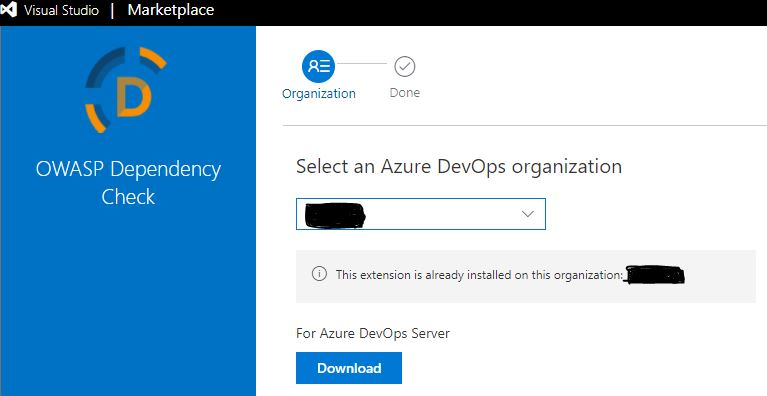
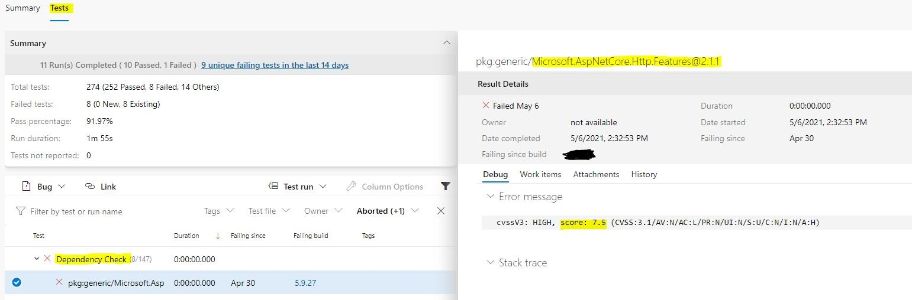
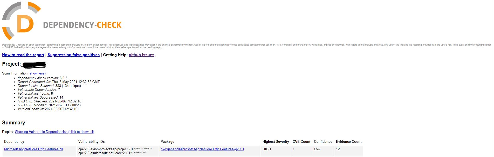

Security Scanning of Third-Party Dependencies With OWASP Dependency Check
Why should you care about security of third-party dependencies
No matter how small the application you're developing is, at some point you'll end up using code that has been developed by someone else, i.e. you'll be adding third-party dependencies to your source code. Deciding on when you should create a specific functionality yourself or when you should utilize a third-party library depends on the security and privacy requirements for your application, time restrictions, maintenance cost, available resources, size of implementation and many other factors. I will not go into detail about when you should choose what, but I would like to underline that it's important to evaluate every case individually and perform third-party risk assessment where possible.
Let's take a look at one example where we could introduce a third-party dependency. I'm developing a web application for my online store and one of the important requirements I would define for it is resilience. When the application is up and running in production and is being accessed by a lot of users from all over the world, there are many factors that can affect how the application performs and responds to hundreds, or even millions of simultaneous requests targeting it. In order to make my application resilient and self-healing I would like to implement resilience features like retry logic for specific operations, fallback to a defined behaviour upon failure, circuit breakers, etc.
How can I do that? Well, I can either develop this functionality myself or I could utilize one of the well-established, open-source third-party libraries out there. Like, for instance, Polly. That's when third-party dependencies come into picture. All the code that your application uses (for example, in form of NuGet packages or even framework libraries) which you and your team haven't written yourself and don't have control over - that code is typically a third-party dependency. Missing control of the third-party code is the key point here: you can't assume that developers of third-party dependencies take security seriously enough. And even if they do take it seriously, no code is perfectly secure and impenetrable - security holes may suddenly be discovered in a specific, previously known as secure, version of the dependency. That's when you need to have a process in place so that you can get informed in case you're using a vulnerable version of the dependency and need to upgrade to a newer version, install a security patch or remove the dependency from your project.
A process like this can be implemented with help of Software Composition Analysis tool like OWASP Dependency Check.
What is Software Composition Analysis (SCA) ? This is a process of managing open-source components in your application. With help of SCA tools you can get more visibility into external dependencies being used, including transitive dependencies (the ones included by external components). SCA tool can be included in the build pipeline for continuous scanning of third-party dependencies - this is also an important part of DevSecOps adoption.
Now, let's see what OWASP Dependency Check tool is and how it can be included in your build pipeline.
What is OWASP Dependency Check (ODC)
The Open Web Application Security Project (OWASP) is a nonpofit foundation whose main goal is to improve software security. OWASP stands behind several open-source software projects that are used by thousands of developers and organizations worldwide for security strengthening of their software. You might also have heard about "OWASP Top 10" which is a document that is continuously updated by OWASP and defines 10 most critical security risks for web applications. If you haven't read it yeat, I do recommend you to check it out: The OWASP Top Ten.
What I also love about OWASP is that some of their core values are openness, inclusion and integrity:
- all materials are free and easily available,
- all projects are open-source and vendor neutral,
- anyone can participate in the OWASP community and contribute to improvement of software security,
- OWASP community is inclusive, respectful, engaging and supportive.
OWASP Dependency Check (ODC) is one of the tools created by OWASP, obviously. The tool was first published in 2012 and has since then evolved quite a lot - it has had over 100 releases, and almost 200 developers from all over the world have contributed to making ODC such a great tool that it is today. Jeremy Long is the lead architect and developer for the tool and is the one who actively maintains and contributes to keeping the tool updated on GitHub. ODC is available both as command line tool, Azure DevOps extension, Maven/Gradle/Jenkins/SonarQube plugin and several others. ODC fully supports scanning of .NET and Java applications, and it also has several experimental analyzers for other languages, like Python and Ruby, that can be enabled on-demand.
So how does ODC work? It will scan through all the project dependencies and try to detect if any of those dependencies include publicly disclosed vulnerabilities. ODC does this by collecting as much information as possible about each dependency in order to identify The Common Platform Enumeration (CPE). If CPE is identified, it will add all associated Common Vulnerability and Exposure(CVE) entries in the report. Main data source used by ODC are National Vulnerability Database(NVD) data feeds provided by NIST, but additional feeds, like Sonatype OSS Index, can be utilized.
Adding OWASP Dependency Check to build pipeline
As I mentioned in the above section, OWASP Dependency Check has several plugins available but the one I'll be showing today is an Azure Pipelines plugin. First of all, you'll need to download OWASP Dependency Check extension to Azure DevOps in order to create a respective build task in your pipeline.
Go to OWASP Dependency Check for Azure Pipelines page in Azure DevOps Marketplace and click "Get it free". You will be navigated to a new page where you can either choose an existing Azure DevOps organization to automatically add this extension to, or you can download the extension directly by clicking "Download" in order to manually upload it to your Azure DevOps server later.

The extension is already installed for my Azure DevOps organization so you may need to check if requested extension must be approved by the administrator after you've added it, before you can start using it in your build pipeline.
Next step is to add a build task to your pipeline in order to continuously perform security scanning. OWASP Dependency Check supports several file type analyzers, you can find an overview here: File Type Analyzers. You can, for example, use Nuspec analyzer that will parse NuGet package specification file, or Nugetconf analyzer that will parse NuGet packages.config file. In my case we're using centralized management of NuGet package versions so we can't use any one of the mentioned file type analyzers. Therefore, we've decided to use Assembly analyzer to perform security scanning of all .NET .dll and .exe files in our applicaiton.
Security scanning may take time, especially when you have quite big application with hundreds of assemblies, therefore I would recommend to create a separate job in your build pipeline that will execute security-related tasks in parallell with the rest of the build tasks. Another benefit is that, as you add more security controls to the build pipeline, you can group them under the same build job, and have a central place where all security controls are defined. It will then be much easier for you and other developers or even security auditors to get an overview of all security checks implemented as part of the application's secure development lifecycle.
Please note that initially OWASP Dependency Check Azure DevOps extension supported only Windows build agents but since 2020 support for running on Linux build agents has been introduced. In order to start running ODC Azure DevOps extension on Linux build agents, you need to ensure that your Azure Pipelines Job is using Linux build agent (see vmImage property in code snippet below) and that you're using latest version of the task -
dependency-check-build-task@6. If you're usingdependency-check-build-task@5, you will need to update it to version 6 since version 5 only supports running on Windows.
Here's an example of how such security job can look like:
- job: myrepo_security_job
pool:
vmImage: 'ubuntu-latest'
steps:
- task: DotNetCoreCLI@2
displayName: 'Build myrepo solution' # In order to scan assemblies and executables I need to build my application code first
inputs:
command: 'build'
projects: '**/*.sln'
arguments: '--configuration $(BuildConfiguration)' # $(BuildConfiguration) = 'Release'
- task: dependency-check-build-task@6
displayName: 'OWASP Dependency Check scan of third-party dependencies' # This task will perform security scan of third-party dependencies
inputs:
projectName: 'myrepo'
scanPath: '$(Build.SourcesDirectory)/**/bin/$(BuildConfiguration)/net5.0/*.dll'
failOnCVSS: 8 # Fail the build if vulnerabilities with CVSS score higher than 8 are discovered
format: 'HTML, JUNIT' # Format of scan result report
suppressionPath: '$(Build.SourcesDirectory)/suppression-file.xml' # File where all the suppressed vulnerabilities are defined
enableExperimental: true # Enable experimental file type analyzers
additionalArguments: '--scan $(Build.SourcesDirectory)/**/bin/$(BuildConfiguration)/net5.0-windows/*.dll' # Additional folder to scan
dependencyCheckVersion: '7.1.2'
- task: PublishTestResults@2
displayName: 'Publish OWASP Dependency Check security scan results'
inputs:
testResultsFormat: 'JUnit'
testResultsFiles: 'dependency-check/*junit.xml'
searchFolder: '$(Common.TestResultsDirectory)'
testRunTitle: 'Dependency Check'
buildConfiguration: '$(BuildConfiguration)'Now every time the build is triggered, a security job will perform security scanning of all .dll and .exe files that have been generated for my application. In case any known vulnerability with CVSS score higher than 8 is discovered and the discovered vulnerability hasn't been suppressed, the build will fail which means that I will need to fix the error and handle the discovered vulnerability before the code can be merged to master.
One of the build tasks publishes scan results for each build so we can check in more detail what vulnerabilities have been discovered during scanning, what the CVSS scores are for each vulnerability, where each vulnerability was registered, etc. In the example above I have defined 2 formats for the report:
- JUnit report provides possibility to integrate with Azure Pipelines so that the scan results will be displayed in "Tests" section of the build together with other test results, for example from unit test execution. If we go to "Tests" tab, we'll be able to get an overview of all the scanned assemblies and in case any of them contain known vulnerabilities, we can just click on those in order to get more information about what has been discovered:

- HTML report will be published as a build artifact which you can download so that you can browse the scan results locally:

As you can see, it's pretty easy to enable continuous security scanning with OWASP Dependency Check as part of CI/CD pipeline. Different values like CVSS score (failOnCVSS) or format of scan result report (format) can be adjusted, depending on secure development practices in your team.
How to analyze and fix build errors triggered by OWASP Dependency Check
Now that we've enabled continuous security scanning of third-party dependencies with OWASP Dependency Check, we need to be prepared for fixing discovered vulnerabilities. Let's say that I've just executed the build pipeline and it has failed during security scanning with an error message saying that a vulnerability has been discovered in one of the application's assemblies with CVSS score higher than 8.
How can we proceed from here? First, we'll open the report and locate the assemblies with CVSS score 8 or higher. Then we'll need to analyze each assembly individually and decide how to fix the discovered vulnerability. You can find more information on how to read OWASP Dependency Check report here: How to read the reports.
There are two possible scenarios:
-
Assembly version being used is vulnerable and you will need to either remove the dependency from the application's code (in case it's not needed anymore or can't be made secure at this point) or update to a version that does not have any registered vulnerabilities. Typically, you will need to check what NuGet package the assembly belongs to and what non-vulnerable version it must be updated to. If assembly is part of the application's framework (like .NET 5 in our case) you can perform the steps described in scenario #2.
-
The discovered vulnerability is:
-
A false positive: false positives can be reported as GitHub issues in the official OWASP Dependency Check repository. Until the issue is fixed in the tool, you will probably need to suppress the vulnerability - see how you can do that below.
-
A framework-specific vulnerability: unless this is a zero-day vulnerability, it can normally be fixed by installing a security patch provided by the framework owners (f.ex., a security patch for .NET 5 provided by Microsoft). You can check what patch must be installed by searching for CVE id that the vulnerability was published for (linked in the scan result report). After the patch is installed on your application servers you can suppress the vulnerability - see how you can do that below.
How can I suppress the vulnerability?
If you need to suppress the vulnerability, you will need to create a suppression file (or update one if it already exists in the repository). You can place the file in the root of your source code repository but it can also be placed in a different location - as you saw earlier, location for the suppression file must be provided in the build task for OWASP Dependency Check (suppressionPath). Add a new <suppress> -node to the bottom of the suppression XML with a comment describing why this vulnerability is being suppressed. If you have several assemblies that are linked to the same vulnerability with the same CVE, you can include those in the same suppression node, as shown in the example below. Some vulnerabilities may have been published with multiple CVE-s and in that case you will need to suppress the vulnerability for every CVE it was registered with. If you have projects that have separate binary output folders, you will need to add a separate suppression node for every binary output folder where this assembly exists. You can find more information about suppressing vulnerabilities here: Suppressing False Positives.
Here is an example of a suppression definition for a vulnerability related to MS Office 2013 that can be fixed by installing a security patch provided by Microsoft:
<!--Vulnerability is related to Office 2013 and a security fix must be deployed for customers
using Office 2013: https://docs.microsoft.com/en-us/security-updates/securitybulletins/2015/ms15-059#affected-software-->
<suppress>
<notes><![CDATA[
file name: Microsoft.Office.Client.Education.dll
file name: Microsoft.Office.Client.TranslationServices.dll
]]></notes>
<filePath regex="true">.*\bMY_ASSEMBLY_FOLDER.*\bMicrosoft.Office.Client.*\b.dll</filePath>
<cve>CVE-2015-1770</cve>
</suppress>First of all, we've added a comment about why the vulnerability is being suppressed so that other developers in the team will not question it. Then we've listed all the assemblies this vulnerability was discovered for - we want to suppress the vulnerability only for the assemblies it has been discovered for. If we add new assemblies in the future, we would still like to know if those assemblies are affected by the same vulnerability instead of letting it go undetected - that's how we can get a bigger picture and clearer understanding of what the security state is for all of the external dependencies we're using in the application. Next we've defined the location of assemblies and/or executables the vulnerability was discovered for - when multiple files are affected, regular expressions can be used to provide the file path. Lastly we've provided a Common Vulnerability and Exposure id that the vulnerability was published for - in case it was published for multiple CVE-s, we'll need to create additional suppression nodes for the remaining CVE-s.
And that's it - after the suppression file is added to the application's source code repository, we can re-trigger the build and it will no longer fail due to this vulnerability.
That's it from me this time, thanks for checking in! If you would like to know more about OWASP Dependency Check, you can find official documentation for the tool here: https://jeremylong.github.io/DependencyCheck
If this article was helpful, I'd love to hear about it! You can reach out to me on LinkedIn, GitHub or by using the contact form on this page :)
Stay secure, stay safe.
Till we connect again!